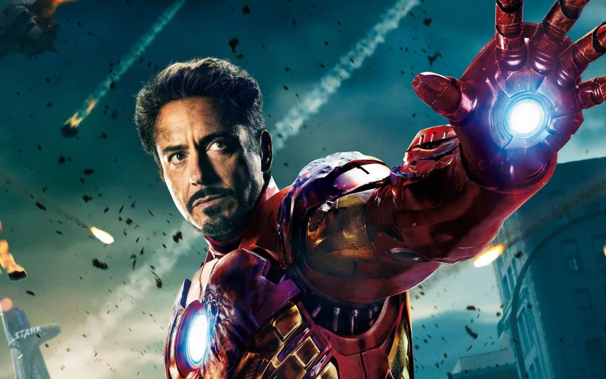

Homem de Ferro (Tony Stark)
Iron Man, também conhecido como Tony Stark, é um dos super-heróis mais icônicos da Marvel Comics. Criado por Stan Lee, Larry Lieber, Don Heck e Jack Kirby, ele fez sua primeira aparição em "Tales of Suspense" #39 em 1963.
História e Origem
Tony Stark é um gênio inventor e empresário bilionário, herdeiro das Indústrias Stark. Durante uma viagem ao Vietnã (atualização para o Afeganistão em versões mais recentes), ele é sequestrado e gravemente ferido por uma explosão. Para salvar sua própria vida e escapar do cativeiro, Tony constrói uma armadura avançada que não apenas o mantém vivo, mas também lhe dá poderes extraordinários. Após escapar, ele aprimora a armadura e decide usá-la para combater o mal como o super-herói Iron Man.
Identidade e Missão
Como Iron Man, Tony Stark utiliza sua avançada armadura tecnológica para enfrentar ameaças globais. A armadura é equipada com uma vasta gama de armas e sistemas defensivos, além de dar a Tony força sobre-humana, capacidade de voo e durabilidade extrema. Ele também continua a inovar e atualizar sua tecnologia para lidar com novos desafios.
Impacto Cultural
Iron Man é um símbolo de inovação e reabilitação, destacando-se como um herói que usa sua inteligência e recursos para proteger o mundo. A adaptação cinematográfica do personagem, interpretado por Robert Downey Jr., lançou o Universo Cinematográfico Marvel (MCU) em 2008, solidificando seu status como um dos personagens mais influentes da cultura pop moderna.
Dados do patrimônio de Tony Stark
Fonte de riqueza: Stark Industries, uma empresa de tecnologia avançada e defesa
Riqueza Estimada US$ 12,4 bilhões (R$ 70,2 bilhões)